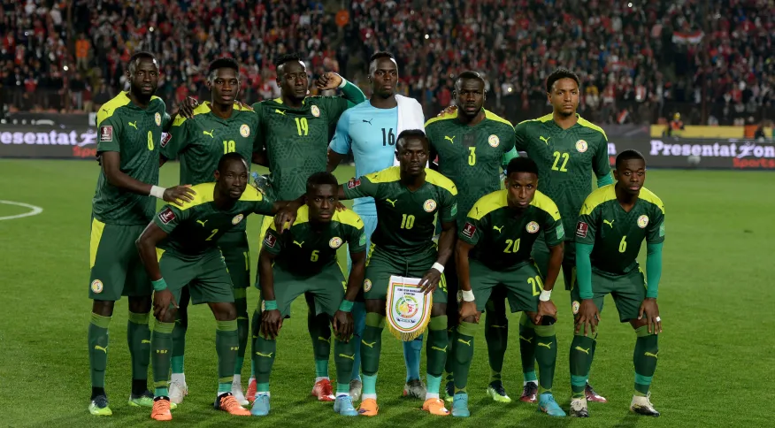

A seleção Senegalesa participou de sua segunda Copa do Mundo de futebol em 2018. Em 2022 Fará sua 8° participação que será no Qatar.
Não obteve títulos em Copa do Mundo.
| Data/Hora | Estádio | Adversário |
|---|---|---|
| 21 nov 2022 / 13h00 | Estádio Al Thumama | Países Baixos |
| 25 nov 2022 / 10h00 | Estádio Al Thumama | Catar |
| 29 nov 2022 / 12h00 | Estádio Internacional Khalifa | Equador |